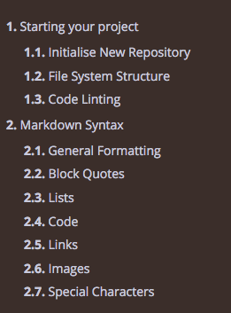
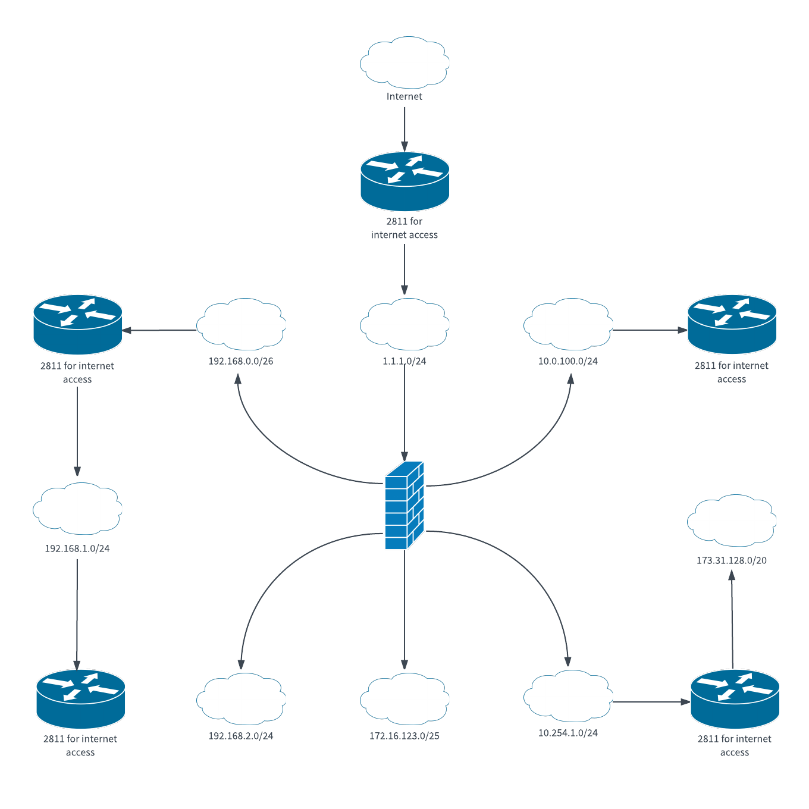

Starting your project
This repository has been created to help you set up a new documentation repository quickly and simply:
- Clone the source repository
- Customise your repository metadata settings (Author, Title, Description)
- Clean up the existing sample documentation and start your own skeleton
- Set up your own local lint checking
- Create a new repository to store your documentation
- Set up CI/CD
Initialise New Repository
Clone This Repository
You need to clone this repository and set up your new documentation repository. Do this from your command line.
git clone https://gitlab.com/jimcooke/markdown-book.git
BOOKNAME="mybook" # Choose your own name here
mv markdown-book "${BOOKNAME}"
cd "${BOOKNAME}"
rm -rf .git # Remove existing git repository details
git init # Create a new git repository
Set Up Book Metadata
In the root directory, edit the file book.toml and change the following section to start off with
title = "<Put your own title here>"
description = "<Put your own brief description here>"
authors = ["<author names, quote-delimited, comma-separated>"]
language = "en"
Git Prerequisites
This is not a git tutorial, so performing a basic tutorial is recommended.
You should also have a remote git server account that you can push to
(like GitLab.com or GitHub.com).
Just as a quick check, you can run the following commands to see if you're all
set locally.
# Check your config
git config --global --list
# Update config if necessary
git config --global user.name "YOUR_USERNAME"
git config --global user.email "your_email_address@example.com"
Initial Commit
Before you go too far, make your inital commit and set up your remote repository server.
git add -A
git commit -m "Initial Commit"
git remote add origin <git repository path, eg. https://gitlab.com/jimcooke/mybook.git>
git push origin master
File System Structure
The nice menu structure that mdBook renders is dependent on a file called
SUMMARY.md. This repository is a bootstrap to make mdBook accessible to
the average user and it will build this summary file for you, but the trick
is you need to adhere to some basic rules to make this simple:
- The first folder for your markdown documentation after the base level of the repository must be
.src - For every folder underneath
srcrepresents a tree branch. Each branch must have a markdown file calledHEADER.mdwhich contains a header and, optionally a paragraph. - It is a good idea to name all your sub-folders with a numeric prefix to denote the order in which you want them to appear in the tree on the left-hand-side in the web view eg.
01.Introduction - File and folder names may not contain spaces. Use underscores, which will render as spaces in HTML published view.
- Apart from the file
HEADER.md, you need to write your documentation in*.md*files. It is a good idea to name them with a numeric prefix to ensure they render in the order you want - Aside from folders and files, you can have any other types of files in these folders to store images, etc. Only folders and files suffixed with
*.mdwill be built into the summary file.
Example
An example of how directory and file names will be rendered can be found from this repository itself. At the time of writing, this was the directory and file structure and list:
src
01.Starting_your_project/
01.Inital_Clone.md
02.File_Structure.md
03.Linting.md
HEADER.md
10.Markdown
01.General_Formatting.md
02.Block_Quotes.md
03.Lists.md
04.Code.md
05.Links.md
06.Images.md
07.Special_Characters.md
HEADER.md
This is what the rendered book menu will look like.

Summary File Generation
The precursor to rendering your documents nicely in HTML using mdbook is
to have the SUMMRY.md file generated. If you have structured your files
and documents as per the rules in this guide, you just need to execute the
make_summary.sh script at the root of this project. It may well throw
errors if you have:
- Not started your
*.mddocument with a Header-1# Titleline - Any of your file or directory names contain spaces
- Any directory in your tree is missing a
HEADER.mdfile
If it works properly, it will look like this
./make_summary.sh
src/SUMMARY.md built successfully!
Code Linting
We use markdownlint (https://github.com/igorshubovych/markdownlint-cli) to enforce good code syntax in our repository.
If you write your documentation using VSCode, which I recommend, you can install an
extension to lint-check your *.md files as you write them. Check out
https://marketplace.visualstudio.com/items?itemName=DavidAnson.vscode-markdownlint
The Markdown markup language is designed to be easy to read, write, and understand. It succeeds - and its flexibility is both a benefit and a drawback. Many styles are possible, so formatting can be inconsistent. Some constructs don't work well in all parsers and should be avoided. For example, here are some common/troublesome Markdown constructs.
markdownlint is a Visual Studio Code extension that includes a library of rules to encourage standards and consistency for Markdown files. It is powered by markdownlint for Node.js which is based on markdownlint for Ruby.
Installing markdownlint
I recommend that you test locally with lint before committing and publishing with CI/CD
To install markdownlint for local testing, make sure you have the java packaging tool
npm installed on your local machine, then
execute the following.
npm install -g markdownlint-cli
Running lint locally
Execute this command from the root of your document repository
markdownlint src
Disabling Lint Rules
Please refer to the markdownlint source repository
https://github.com/DavidAnson/markdownlint
for a discussion on how to use the options.config file to globally disable a
particular lint rule that causes you issues (a good example might be MD013 which
complains if line length is greater than 80). The markdownlint-cli tool accepts
an argument -c to point to your config file.
For the line length example mentioned above, the simple options file to disable the rule looks like this
{
"MD013": false
}
The command to invole the lint check with the suppressed rule is
markdownlint -c options.config src
Tweaking Lint Rules
Rather than disabling the line length rule altogether, it migt be a better idea to put a reasonable value that picks up excessively long lines without becoming annoying. A good compromise is to set the value to 200. I find 80 a bit extreme. This is what my modified options rule file looks like:
{
"MD013": {
"line_length": 200
}
}
Overriding Lint In Situ
If you have code that is simply going to have to contain a linting violation, one can suppress it by putting the following directives around it.
<!-- markdownlint-disable -->
any violations you want
<!-- markdownlint-restore -->
Building the Book
This is the bit where we generate the nice static HTML file that can be published as a book. When we build for production CI/CD, I use a docker container called hrektts/mdbook.
To emphasise again, it is better to build and test locally before one commits, hence
I recommend installing rust's mdbook locally on your machine. The repository for
the Rust code is https://rust-lang-nursery.github.io/mdBook/cli/index.html but it
is easier just to install from their released binaries at
https://github.com/rust-lang-nursery/mdBook/releases
Build for Publishing
By default, mdbook will build the HTML into a directory called book. I change
this to public so I can publish on git pages. The build command I use from the
root of the repository is:
mdbook build --dest-dir public
Serving Locally
mdbook can also serve your pages locally. To do this, execute the following command from the root of your repository:
mdbook serve --dest-dir public
Then view your book at http://localhost:3000
Publishing to Pages
These are instructions for GitLab, which I now prefer over GitHub. By default
when you publish to pages GitLab, the URL will be
http://<username>.gitlab.io/<repository>/
For this repository, the pages location is https://jimcooke.gitlab.io/markdown-book/
GitLab CI/CD
Our demo deployment is controlled by GitLab CI/CD. Our repository ignores the public folder in .gitignore.
Instead, the following CI pipeline has been defined in the repository root in file '.gitignore`. Basically it just:
- Starts an mdbook container from docker hub
- Installs markdownlint
- Builds the summary file
- Lint-checks the document
- Builds the HTML document
- Publishes the resulting artefact to pages
image: hrektts/mdbook:latest
pages:
stage: deploy
script:
- apt-get update
- apt-get -y install curl
- curl -sL https://deb.nodesource.com/setup_6.x | bash -
- apt-get -y install -y nodejs
- apt-get -y install -y npm
- npm install -g markdownlint-cli
- ./make_summary.sh
- markdownlint -c options.config src
- mdbook build --dest-dir public
artifacts:
paths:
- public
only:
- master
Publising to Second Location
Just to prove how versatile we can be with git, I set up a second location to publish
the material to, this time on GitHub pages. I created a new repository with my own account
called https://github.com/cookeji/markdown-book. In the repository settings, I went to
the GitHub Pages section and chose [master branch /docs folder] as the source.
My Makefile will publish the HTML code to the /docs folder. So, to publish from there
I just set up a secondary remote and push to there as follows:
git remote add secondary1 https://github.com/cookeji/markdown-book
make
make publish
git add -A
git commit -m "Publish new version of the book"
git push origin master # Normal push to primary
git push -f secondary1 master # Push to secondary
This works and can be seen at https://cookeji.github.io/markdown-book/
Markdown Doco Use Cases
Markdown documentation is a useful tool to have at your disposal. It is particularly suited for documenting existing git repositories as it is a logical place to keep your documentation ... right alongside your code.
Advantages versus Confluence
- Able to keep local copies on your own workstation and publish to multiple sites
- Can serve the pages locally from your PC, ie. it is there when you are offline if you have a copy
- If implemented properly, consistent formatting and lint checking
- Version control is much more robust and git framework lends itself to multi-person collaboration
- Very easy to pass source to PDF generators for printing. Can easily generate beautiful printed documents
Disadvantages versus Confluence
- No WYSIWYG editor. There is a learning curve
- Generally git markdown more restrictive access to modify code, but easy to make it world-readable in pages
- No integration with Jira and other Atlassian tools
Markdown Syntax
This chapter is dedicated to some basic markdown formatting, as well as a couple of for things like escaping special characters.
A good external reference for this is https://www.markdownguide.org/basic-syntax/
General Formatting
Headers
# Heading Level 1
## Heading Level 2
### Heading Level 3
#### Heading Level 4
##### Heading Level 5
###### Heading Level 6
Alternative notation for Heading Levels 1 and 2
Heading Level 1
===============
Heading Level 2
---------------
Paragraphs
To create paragraphs, use a blank line to separate one or more lines of text. You should not indent paragraphs with spaces or tabs.
Line Breaks
To create a line break (like on this example line), you
end the line with 2 or more spaces.
Font Formatting
Bold Text
Text is rendered as bold by being escaped by double-asterisks or double-underscores
This will be rendered as **bold** text
This will also be rendered as __bold__ text
Italic Text
Text is rendered as italic by being escaped by single-asterisks or single-underscores
This will be rendered as *italic* text
This will also be rendered as _italic_ text
Bold Italic Text
Text is rendered as bold and italic by being escaped by triple-asterisks or triple-underscores
This will be rendered as ***bold italic*** text
This will also be rendered as ___bold italic___ text
Horizontal Lines
To create a horizontal rule, use three or more asterisks (***), dashes (---), or underscores (___) on a line by themselves.
***
---
_________________
Block Quotes
To create a blockquote, add a > in front of a paragraph. Block quotes can contain multiple paragraphs. Add a > on the blank lines between the paragraphs.
Blockquotes can contain other Markdown formatted elements. Not all elements can be used, you will need to experiment to see which ones work.
> This is the source for a block quote
This is what the block quote looks like
This is a line after a blank line
Block quotes can be nested with multiple >> characters
This is the outer block
This is an inner block Back to the outer block
Lists
Ordered Lists
To create an ordered list, add line items with numbers followed by periods. The numbers don’t have to be in numerical order, but the list should start with the number one.
1. First item
2. Second item
3. Third item
4. Fourth item
- First item
- Second item
- Third item
- Fourth item
Unordered Lists
To create an unordered list, add dashes (-), asterisks (*), or plus signs (+) in front of line items. Indent one or more items to create a nested list.
* First item
* Second item
* Third item
* Fourth item
- First item
- Second item
- Third item
- Fourth item
List Elements
To add another element in a list while preserving the continuity of the list, indent the element four spaces or one tab. The following elements work within a list:
- Paragraphs
- Blockquotes
- Code Blocks
- Images
Code
Tables
Tables are done with simple piping notation to denote columns. Colons are used to right-align, left-align or centre-align columns. There must be at least 3 dashes separating each header cell. The outer pipes (|) are optional, and you don't need to make the raw Markdown line up prettily. You can also use inline Markdown.
| Tables | Are | Cool |
| ------------- |:-------------:| -----:|
| col 3 is | right-aligned | $1600 |
| col 2 is | centered | $12 |
| zebra stripes | are neat | $1 |
| Tables | Are | Cool |
|---|---|---|
| col 3 is | right-aligned | $1600 |
| col 2 is | centered | $12 |
| zebra stripes | are neat | $1 |
You can use markdown formatting inside tables as follows
Markdown | Less | Pretty
--- | --- | ---
*Still* | `renders` | **nicely**
1 | 2 | 3
| Markdown | Less | Pretty |
|---|---|---|
| Still | renders | nicely |
| 1 | 2 | 3 |
Code
To denote a word or phrase as code, enclose it in tick marks (`).
At the command prompt, type `nano`.
At the command prompt, type nano.
Code Blocks (Fenced)
Use three backticks (```) on the lines before and after the code to depict the code as a code block.
{
"firstName": "John",
"lastName": "Smith",
"a
}
Links
Images
Links
To create a link, enclose the link text in brackets (e.g., [Duck Duck Go]) and then follow it immediately with the URL in parentheses (e.g., (https://duckduckgo.com)).
My favorite search engine is [Duck Duck Go](https://duckduckgo.com).
My favorite search engine is Duck Duck Go.
Link Titles
You can optionally add a title for a link. This will appear as a tooltip when the user hovers over the link. To add a title, enclose it in parentheses after the URL.
My favorite search engine is [Duck Duck Go](https://duckduckgo.com "For privacy").
My favorite search engine is Duck Duck Go.
URLs and Email Addresses
To quickly turn a URL or email address into a link, enclose it in angle brackets.
<https://www.markdownguide.org>
<fake@example.com>
https://www.markdownguide.org fake@example.com
Formatting Links
You can format links as bold or italic in the same way as normal text.
Images
URL Link Images
# Markdown syntax


Local Images
# Markdown syntax


Special Characters
Special Characters
There are special characters like square brackets that are interpreted as markdown syntax and need to be escaped properly. I tend to steer away from using escape characters as it quickly becomes doubly-confusing if you have to escape the escape character itself, or other edge cases you may encounter. Instead, I prefer to use the decimal ascii codes and get finished with it.
Here are some common ones
| Character | Markdown Ascii | Name |
|---|---|---|
| TAB | 	 | Tab |
| LF (linefeed) | | Line feed |
| CR (carriage return) | | Carriage return |
| | | | | Pipe or vertical bar |
| " | " | double-quote |
| ' | ' | single-quote |
| < | < | left angle-bracket |
| > | > | right angle-bracket |
| @ | @ | at |
| [ | [ | left square-bracket |
| ] | ] | right square-bracket |
| ^ | ^ | caret |
| ` | ` | backtick |
| { | { | left curly-brace |
| } | } | right curly-brace |
| ~ | ~ | tilde |
Units
| Character | Markdown Decimal | Name |
|---|---|---|
| ° | ° | Degrees |
Vulgar Fractions
| Character | Markdown Decimal | Name |
|---|---|---|
| ¼ | ¼ | One Quarter |
| ½ | ½ | One Half |
| ¾ | ¾ | Three Quarters |
| ⁄ | ⁄ | Slash |
| ⅐ | ⅐ | One Seventh |
| ⅑ | ⅑ | One Ninth |
| ⅒ | ⅒ | One Tenth |
| ⅓ | ⅓ | One Third |
| ⅔ | ⅔ | Two Thirds |
| ⅕ | ⅕ | One Fifth |
| ⅖ | ⅖ | Two Fifths |
| ⅗ | ⅗ | Three Fifths |
| ⅘ | ⅘ | Four Fifths |
| ⅙ | ⅙ | One Sixth |
| ⅚ | ⅚ | Five Sixths |
| ⅛ | ⅛ | One Eighth |
| ⅜ | ⅜ | Three Eighths |
| ⅝ | ⅝ | Five Eighths |
| ⅞ | ⅞ | Seven Eighths |